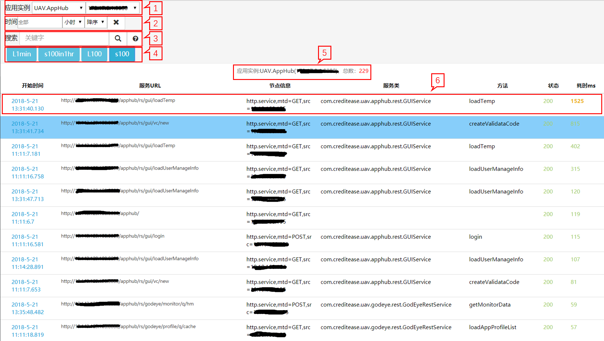
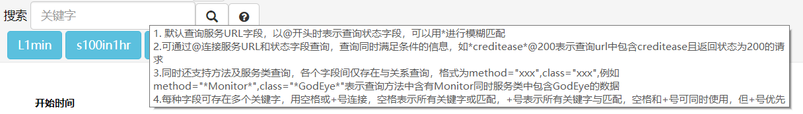

调用链跟踪
调用链模型简介
调用链元数据：
- SpanEndpointType：调用类型（Root(“E”), Service(“S”), Client(“C”), Method(“M”)）；
- traceId：调用链唯一标识符；
- spanId：一条调用链中当前节点的调用顺序（与SpanEndpointType 结合唯一）；
- parentId：一条调用链中当前节点的父调用节点。
调用链绘制规则：
- 调用者（服务、web）最初调用（无父调用）记为开始节点E，并生成唯一调用链ID，traceID；
- 系统内应用组件调用（如httpclient，方法调用等），spanId加末尾数字加1（若为第一个则末尾加.1）；
系统间调用（如A服务调用B服务），A服务与B服务span信息只有SpanEndpointType不同（分别对应span的两个端）。

特别提醒： 如果您的项目中使用了jersey并且使用application/x-www-form-urlencoded形式传递参数等信息，请在服务端使用@FormParam注解来获取参数。否则在开启重调用链的情况下将无法获取参数。
调用链跟踪启停
调用链跟踪功能可在调用链跟踪中进行动态启停。
调用链跟踪视图
在上帝之眼中选择调用链跟踪进入列表视图

列表视图

1）选择实例，下拉框从左至右含义如下：
- 选择不同的应用集群
- 选择查看同一个应用集群中不同的应用实例；
2） 搜索某时间的调用链数据，用法与应用日志搜索中选择时间一致。从左至右含义如下：
时间：全部代表全部的时间；
时间设置
- 按日期：点击"全部"框，弹出框选择日期；
- 按小时:点击"全部"框，依次选择弹出框的日期、小时；
- 按分钟：点击"全部"框，依次选择弹出框的日期、小时、分钟；
排序方式：可选升序或降序
 ：清除时间选择，代表全部时间；
：清除时间选择，代表全部时间；
3） 关键字搜索功能
- 关键词输入框悬停可查看查询简要规则 
 ：点击搜索选择时间内的调用链信息，不输入时间范围： 则默认搜索最近1小时调用链；
：点击搜索选择时间内的调用链信息，不输入时间范围： 则默认搜索最近1小时调用链；：点击查看调用链查询功能的详细说明及相关示例
调用链关键字查询规则说明：
- 在搜索框中直接键入关键字时默认在
服务URL字段中进行搜索 - 在搜索框中键入的关键字以
@开头时表示在状态字段中进行搜索- 例如在搜索框中键入
@500则代表搜索返回状态为500的调用链信息
- 例如在搜索框中键入
- 可以用@连接
服务URL和返回状态进行联合查询- 例如在搜索框中键入
monitor@500则代表查询服务URL中含有monitor同时返回状态为500的调用链信息
- 例如在搜索框中键入
- 可以直接使用形如
url="xx",state="xx"的形式对各字段进行查询，等号前key值即查询字段，目前支持的查询字段有服务URL(url),返回状态(state),服务类(class),方法(method),各字段间为与关系；等号后的value值为查询关键字，支持规则5中涉及到的多关键字查询及规则6中的模糊匹配- 例如可以在搜索框中键入
url="montior",state="500 404",method="*query*"来查询url中含有monitor，返回状态为500或404，且method中含有query的调用链信息
- 例如可以在搜索框中键入
- 目前支持的查询字段中均支持多关键字查询，具体规则如下：
- 关键字之间支持或关系查询，使用空格分隔，任一关键词匹配即可
- 例如
<kwd1> <kwd2>表示kwd1或kwd2存在
- 例如
- 关键字之间支持与关系查询，使用
+连接，要求所有关键字匹配- 例如
<kwd1>+<kwd2>表示kwd1和kwd2同时存在
- 例如
- 空格和
+可以同时使用，由+连接的关键字相当于一个或关键字- 例如
<kwd1>+<kwd2> <kwd3> <kwd4>表示(kwd1 and kwd2 同时存在)或kwd3存在或kwd4存在
- 例如
- 关键字之间支持或关系查询，使用空格分隔，任一关键词匹配即可
- 可在关键字两端添加*进行模糊匹配
- 例如
\*monitor\*表示所有包含monitor的数据都会被匹配
- 例如
注意事项：
- 在关键字不添加*时，所查询的关键字会进行分词处理，分词后的关键字无法高亮显示，如果不希望分词可使用加*的方式进行模糊查询
- 关键词进行模糊匹配后不再支持或关键词匹配，但支持与关键词匹配；即键入形如
*monitor*的关键字后不支持通过空格连接其他关键字进行或查询
- 在搜索框中直接键入关键字时默认在
4）快捷查询按钮，提供常用的查询方式；
L1min：查看最近1分钟内的服务请求；
s100in1hr：查看1小时内最慢100条的服务请求；
L100：查看24小时内最近100条的服务请求；
s100：查看24小时内最慢100条的服务请求；
5）显示所选择的应用实例和服务请求的总数；
6）显示服务调用信息，点击查看该次调用请求的调用链详情；
- 开始时间：服务请求开始的时刻；
- 服务URL： 服务的URL地址；
- 节点信息：服务类型+本机IP；
- 服务类：服务所属的类；
- 方法：服务请求的方法；
- 状态：可点击其查看状态
OK表示状态良好； Err表示异常； 数字表示HTTP响应状态码； - 耗时ms：花费在该线程的时间；
调用链详情

1)调用链跟踪:traceID：IP+端口+时间戳+当前线程ID+原子变量；
2)该服务所属应用实例与端口，当前服务总数；
3)返回至调用链列表视图；
4)归属于同一条服务请求，可收起；
5)显示本次调用信息，详情如下，点击进入服务调用详情；
- 执行顺序：服务执行的优先级；
- 开始时间：服务请求开始的时刻；
- 服务/调用URL：显示调用是一个服务或者是一个URL；
- 类型：E表示Root：代表Span总入口端；
S表示Service：代表Span的服务端组件； C表示Client：代表Span的客户端组件； M表示Method； - 节点信息：服务类型+本机IP；
- 所在类：服务所属的类；
- 方法：所属服务请求或服务的方法；
- IP&端口：IP号和端口号；
- 应用标识：所属的应用；
- 状态：可点击查看状态；
OK表示状态良好； Err表示异常； 数字表示HTTP响应状态码； - 耗时ms： 花费在该线程的时间；
6)调用链关联日志按钮；
调用链详情示例：
选择电签.天威代理服务作为示例说明：
（7）标识一列spanID；

上述调用链详情流程说明如下：
用户（10...）调用服务A(http://:8080/ccsp/ccsp/icert/apply)，访问了应用ccsp，总耗时1020ms；
服务A(ccsp)发起一个jdbc.client访问，执行了executeQuery；
服务A(ccsp)再通过Apache.http.Client发送了sendPost，调用服务B（http:10...*.8088），访问了应用servproxy；
服务B(servproxy)发起了三个method调用（001、002、003），注意：method实际是service的下一级，但将其作为同一级显示；
服务B(servproxy)再执行了jdbc.client的executeQuery、executeUpdate各两次；
服务B(servproxy)通过apache.http.AsyncClient调用了另一服务C；
服务调用详情

1) 刷新当前页；
2) 调用环节明细；
3) 服务的详细信息；
4) 元数据相关的内容，点击查看详情；
元数据详情

1) 元数据
- spanID: 一条调用链中当前节点的调用顺序；
- Parentid: 一条调用链中当前节点的父调用节点；
2) 请求头信息
3) 请求内容：发起请求的内容，例如图示为：中华人民大团结；
4) 响应头信息
5) 响应内容：响应所请求的内容显示，例如图示为：中华人民大团结；